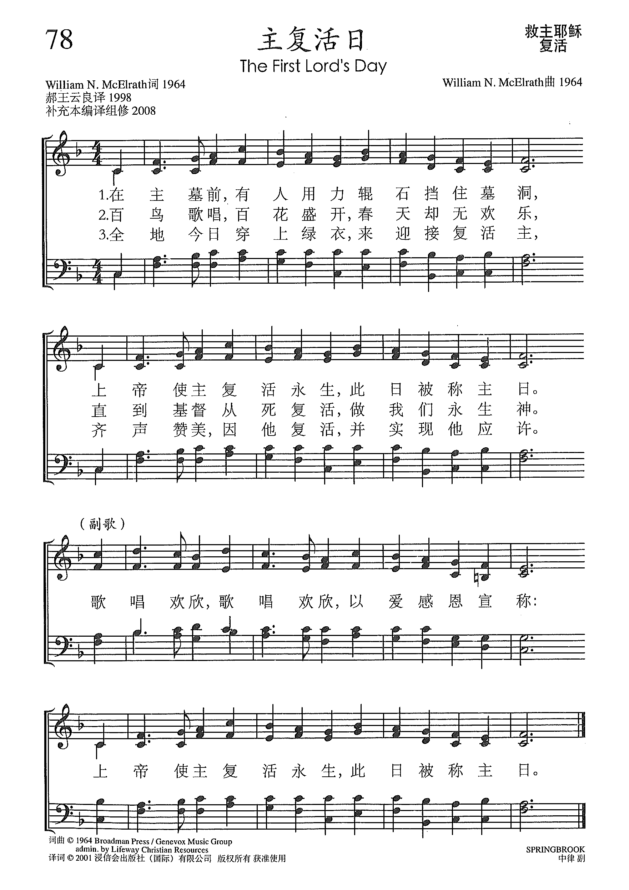
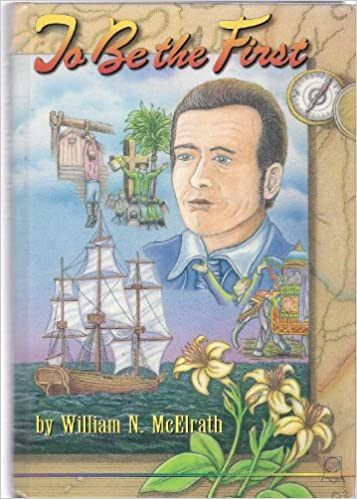

|
|
【主復活聖日】 |
|
|
在主墓前，眾人合力輥石擋住墓洞， |
|
https://www.xueshengshi.com/?p=10663 主复活日 ( The First Lord’s Day ）

|
|
|
|
|

The First Lord's Day/Hallelujah William N McElrath https://youtu.be/pVvEUgG1eQ0 - https://youtu.be/U0qMAlocybk
The First Lord's Day
| Text: | The First Lord's Day |
| Author: | William N. McElrath |
| Tune: | SPRINGBROOK |
| Composer: | William N. McElrath |
162. The First Lord's Day
| Text Information | |
|---|---|
| First Line: | They rolled a stone before the door |
| Title: | The First Lord's Day |
| Author: | William N. McElrath |
| Refrain First Line: | We sing for joy, we sing for joy |
| Meter: | 8.6.8.6. (C.M.) with Refrain |
| Language: | English |
| Publication Date: | 1991 |
| Scripture: | |
| Copyright: | 1964 Broadman Press(SESAC) |
| Tune Information | |
|---|---|
| Name: | SPRINGBROOK |
| Composer: | William N. McElrath |
| Meter: | 8.6.8.6. (C.M.) with Refrain |
| Key: | F Major |
| Copyright: | 1964 Broadman Press(SESAC) |
| Short Name: | William N. McElrath |
| Full Name: | McElrath, William N., 1932- |
| Birth Year: | 1932 |
McELRATH, WILLIAM N. (b. 1932): Th.M., M.Div., B.A., author of more than 60 books published under three different names in two different languages, the most recent titles being Pilgrims on the Wilderness Road and From Slave to Governor: The Unlikely Life of Lott Cary, both from Parson Place Press. Published hymn writer; editor of a major hymnal in the Indonesian language. More information at www.PerryThomasBooks.com.
William N. McElrath(from In Melody and Song, Darcey Press, 2014


The First Lord’s Day – William N. McElrath

McElrath hasn’t confined himself to this song, but has written dozens of books to underscore his fascination with the spread of faith that the Holy Son’s miraculous revival has inspired for the last two millennia. It doesn’t matter in what language you say it, because the emotion is the same as the expression on one’s face and the beating of the believer’s heart.
There’s also a book about other missionary efforts by Adoniram Judson, so McElrath’s interests are evident – he’s excited about the spread of Christianity worldwide. He’s also reportedly authored a hymnal in Indonesian, and one can imagine “The First Lord’s Day” is likely among that hymnal’s pages. Joy. It must look the same on an American face as it does on an East Asian face to William, prompting his effort to have the seminal message of his faith published in both English and Indonesian. With books and a hymnal, the Easter message that this composer crafted can be passed on from one generation to another. Must be a pretty warm feeling for this guy, huh?
http://songscoops.blogspot.com/2013/02/the-first-lords-day-william-n-mcelrath.html